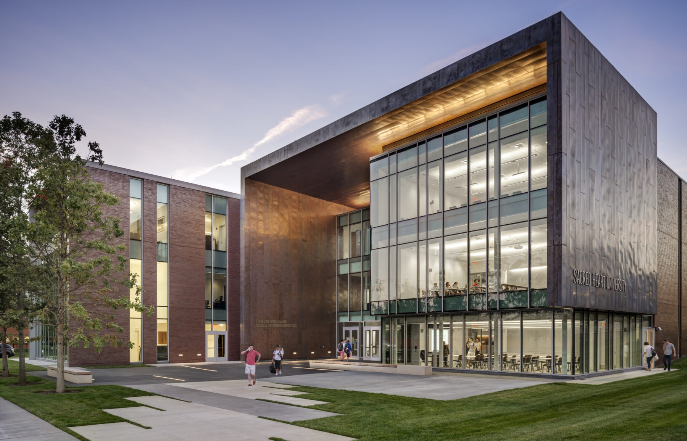

Martire Business and Communications Center

The Martire Center houses the academic departments within the College of Arts and Sciences and the School of Communication, Media, and the Arts. This building is located on the corner of Park Avenue and Jefferson Street in Fairfield. It offers state-of-the-art facilities that include the Dr. Michelle C. Loris '70 Forum for leadership institutes, lectures, and screenings; dedicated conference rooms for business meetings and internships; problem-based learning laboratories; screening venues; technology-enhanced classrooms with multimedia technology and moveable furniture for various learning configurations; satellite equipment; interactive labs including a motion-capture lab for motion picture animation and video game design; large-screen digital cinema; two large television studios for TV, video, and film production; and a radio station.
https://sacredheart.smartcatalogiq.com/en/2023-2024/2023-2024-undergraduate-catalog/university-facilities/frank-and-marisa-martire-business-and-communications-center